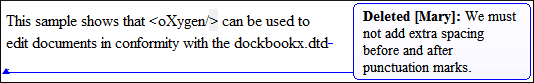

Author Callouts
Oxygen XML Author uses callouts to present comments and tracked change modifications that you or other members of your team have added to the document.
Displaying Callouts in Author Mode
The callouts are displayed in the right side of the editing area in Author mode. They are decorated with a colored border and also have a colored background. The background color is assigned automatically by the application depending on the user who is editing the document and the type of change, but it can also be customized from the Review preferences page. This preferences page allows you to configure the colors for tracked change insertions or deletions, and for comments.
You can also choose to use the same color for all changes of that particular type of change, regardless of who makes the change. To do this, select the Fixed option for the particular type of change and choose a color from the color box. If the Automatic option is selected, Oxygen XML Author automatically assigns a color based upon the Colors for automatic assignment list.
The horizontal line that connects the callouts to their corresponding text fragments has the same color as the border. If this horizontal line is not visible, select the Show all connecting lines option in the Callouts preferences page. If you hover over a callout, it is highlighted and a tooltip is displayed that contains additional information.

 View All Changes/Comments or
View All Changes/Comments or  View Only Changes/Comments by is selected in the
View Only Changes/Comments by is selected in the  Track Changes Visualization
Modes drop-down menu. Oxygen XML Author does not display callouts in
Track Changes Visualization
Modes drop-down menu. Oxygen XML Author does not display callouts in
 View Final and View Original modes.
View Final and View Original modes.In some cases, the text you are editing can span into the callouts area. For example, this
situation can appear for callouts associated with wide images or space-preserved elements
that contain long fragments (such as a DITA <codeblock> element or
<programlisting> in DocBook). To help you view the text under the
covered area, Oxygen XML Author applies transparency to these callouts. When the cursor
is located under a callout, the transparency is enhanced, allowing you to both edit the
covered content and access the contextual menu of the editing area.
Adjusting Callout Width
To display more of the content in all the callouts in the current document, you can adjust the width by dragging the left side of any of the callouts. This will adjust the width for all comments in the current document. When you end the current editing session, the width of all callouts will revert back to the default value, which is the value of the Initial Width option in the Callouts preferences page.
You can also adjust the maximum number of lines to be shown in the callouts using the Text Lines Count Limit option. Note that this does not limit the number of lines in the actual comment. It only limits the number of lines shown without opening or editing it.
Type of Callouts in Oxygen XML Author
-
Comment Callouts - As long as the Comments option is selected in the Callouts preferences page, comments are displayed in callouts. A comment callout contains the name of the author who inserts the callout and the comment itself. You can also select the Show review time option to include timestamp information in the comment callouts.
Figure 3. Comment Callouts There are several types of comments that can be added in Author mode:- Author Review Comments - Comments that you associate with specific
content. To insert this type of comment, select the content and use the
 Add Comment
action that is available on the toolbar (or in the Review
submenu of the contextual menu).
Add Comment
action that is available on the toolbar (or in the Review
submenu of the contextual menu). - Comments Added to Tracked Changes - Comments that you add to an already
existing tracked change insertion or deletion. To insert this type of
comment, right-click the change in the main editor or its callout and select
 Comment Change.
Comment Change. -
Replies to Comments - You can use this type of comment to create discussion threads. To insert this type of comment, right-click the change in its callout and select Reply. A single callout is presented for a root comment or change and its replies. The replies are displayed with an indentation in the callouts and those that are on the same level are sorted depending on the timestamp.
Figure 4. Callout for a Comment with Replies  Tip: When adding, editing, or replying to a comment, you can use Enter to insert line breaks and Oxygen XML Author will take the line breaks into account when presenting the callout. You can also use Ctrl + Enter to accept your changes and close the dialog box.
Tip: When adding, editing, or replying to a comment, you can use Enter to insert line breaks and Oxygen XML Author will take the line breaks into account when presenting the callout. You can also use Ctrl + Enter to accept your changes and close the dialog box.
- Author Review Comments - Comments that you associate with specific
content. To insert this type of comment, select the content and use the
-
Tracked Change Deletion Callouts - As long as the Track Changes Deletions option is selected in the Callouts preferences page, deletions that are made while the Track Changes feature is enabled are displayed in callouts. A deletion callout contains the type of callout (Deleted) and the name of the author that made the deletion. You can also select the Show deleted content in callout option to display the actual deleted content in the callout. Additionally, you can select the Show review time option to include timestamp information in the deletion callouts.
Figure 5. Deletion Callouts  -
Tracked Change Insertion Callouts - As long as the Track Changes Insertions option is selected in the Callouts preferences page, insertions that are done while the Track Changes feature is enabled are displayed in callouts. An insertion callout contains the type of callout (Inserted) and the name of the author that inserted the content. You can also select the Show inserted content in callout option to display the actual deleted content in the callout. Additionally, you can select the Show review time option to include timestamp information in the deletion callouts.
Figure 6. Insertion Callouts 
Callout Contextual Menu Actions
- Insertion or Deletion Callout Actions
-
The following actions are available in the contextual menu of an insertion or deletion callout:
- Reply
- Opens a dialog box that allows you to add a reply to a comment or Tracked Changes. When replying to a comment, the dialog box shows the entire conversation in the comment thread, starting with the first comment added in the particular thread, followed by all the replies. After replies are added to a comment thread, they are displayed with an indentation in the callouts and Review view.
- Mark as Done
- A toggle action that marks or unmarks a comment or comment thread as being done. It is also available for Tracked Changes that are displayed in a callout. When a comment or change is marked as done, the callout is grayed out and cannot be edited unless the action is toggled to the unmarked state. The action applies to the particular comment and all of its descendents. This is useful for marking comments or changes that have been addressed, leaving only those that still need some attention.
 Accept
Change
Accept
Change- Accepts the tracked change, removes the callout, and moves to the next change. For an insertion change, it keeps the inserted text and for a deletion change, it removes the content from the document.
 Reject
Change
Reject
Change- Rejects the tracked change, removes the callout, and moves to the next change. For an insertion change, it removes the inserted text and for a deletion change, it preserves the original content.
 Comment
Change
Comment
Change- Opens a dialog box that allows you to add a comment to an existing Tracked Change. The comment will appear in a callout and a tooltip when hovering over the change. If the action is selected on an existing commented change, the dialog box will allow you to edit the comment.
- Edit Reference
- If the fragment that contains a callout is a reference, use this option to go to the reference and edit the callout.
 Callouts Options
Callouts Options- Select this option to open the Callouts preference page where you can configure various callout options.
- Comment Callout Actions
-
The following options are available in the contextual menu of a comment callout:
- Reply
- Opens a dialog box that allows you to add a reply to a comment or Tracked Changes. When replying to a comment, the dialog box shows the entire conversation in the comment thread, starting with the first comment added in the particular thread, followed by all the replies. After replies are added to a comment thread, they are displayed with an indentation in the callouts and Review view.
- Mark as Done
- A toggle action that marks or unmarks a comment or comment thread as being done. It is also available for Tracked Changes that are displayed in a callout. When a comment or change is marked as done, the callout is grayed out and cannot be edited unless the action is toggled to the unmarked state. The action applies to the particular comment and all of its descendents. This is useful for marking comments or changes that have been addressed, leaving only those that still need some attention.
 Show/Edit
Comment
Show/Edit
Comment- Opens a dialog box that displays the discussion thread and allows the current user to edit comments that do not have replies. If you are not the author who inserted the original comment, the dialog box just displays the comment without the possibility of editing it.
 Remove
Comment
Remove
Comment- Removes a selected comment. If you remove a comment that contains replies, all of the replies will also be removed.
- Edit Reference
- If the fragment that contains a callout is a reference, use this option to go to the reference and edit the callout.
- Callouts Options
- Select this option to open the Callouts preference page where you can configure various callout options.
Printing Callouts
When you print a document from Author mode, all callouts that you or other authors have added to the document are printed. For a preview of the document and its callouts, go to .
Review View
The Review view is also useful for managing the information in callouts. In this view, changes and comments are presented in a compact form, in the order they appear in the document, and they are synchronized with the changes in the callouts. You can also search for specific changes or comments and it includes some filtering options (for example, you can filter it to only show certain types of edits or to only show edits for a particular author).
For more information, see Review View.
To watch our video demonstration about the Callouts support, see our video demonstration: